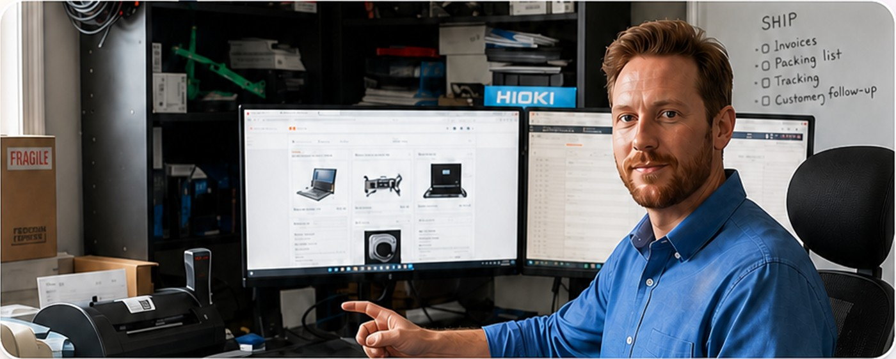
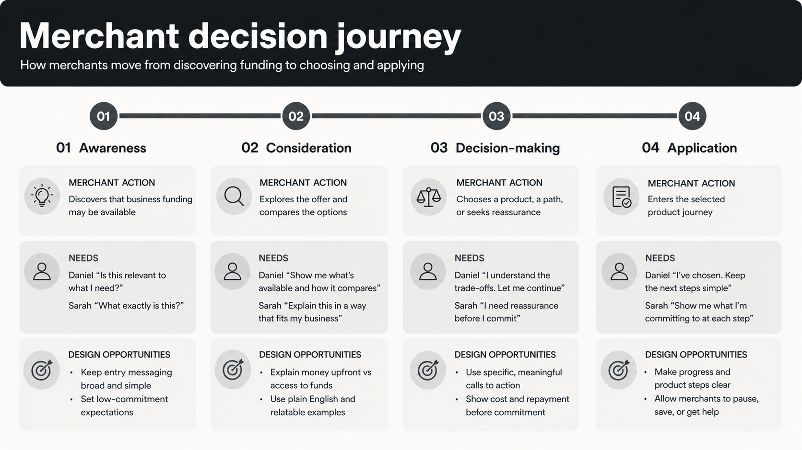
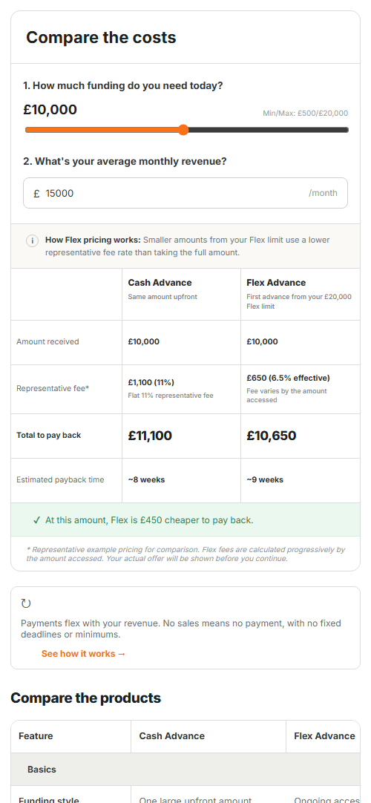
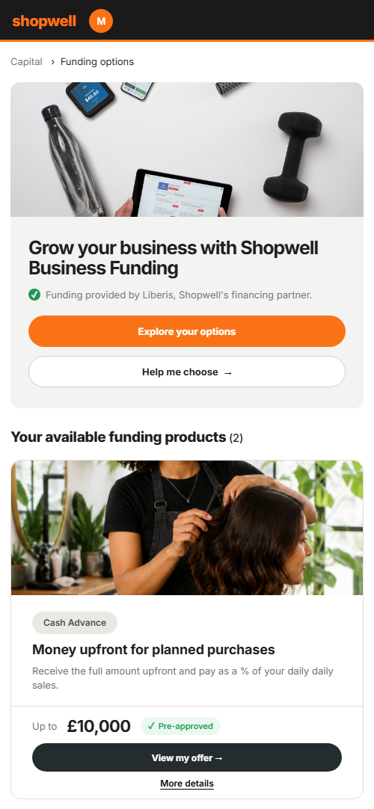
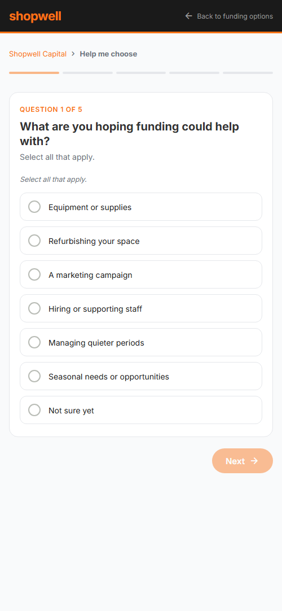
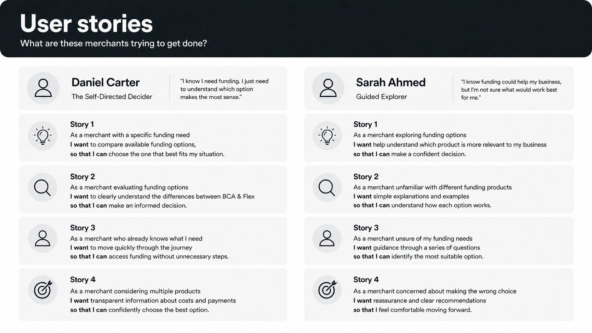
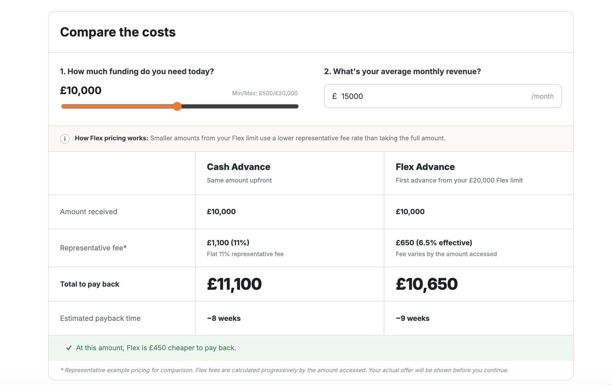
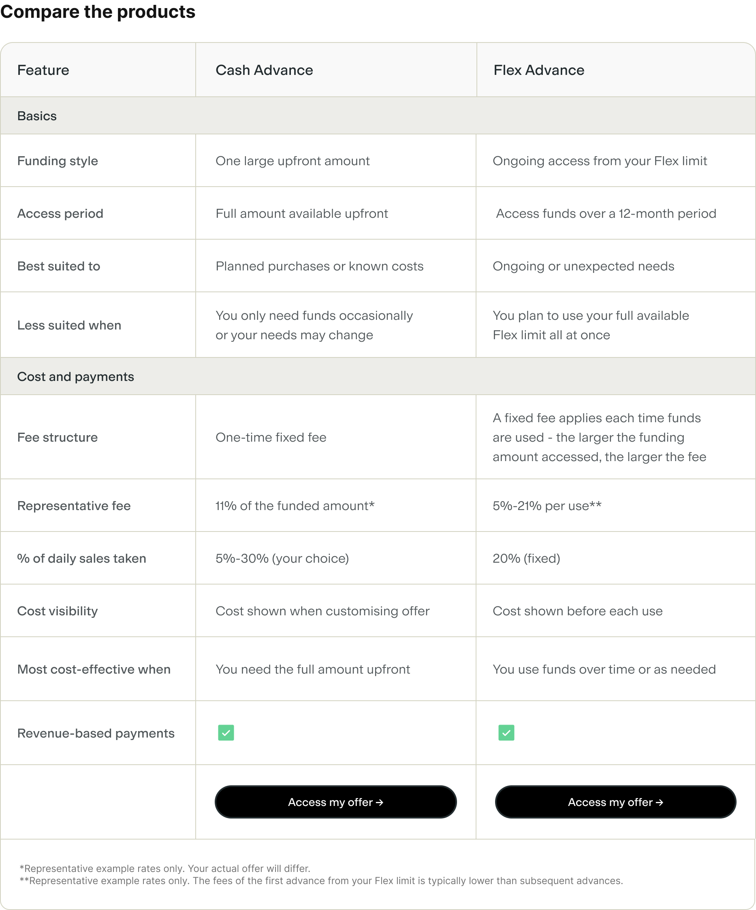

Helping merchants choose the right funding product
My role
Product Designer: Design Strategy, UX/UI Design
Team
PMCommercialSalesUser Research
Timeline
Q1–Q3 2026
The problem
As Liberis moved towards offering merchants more than one funding product, the job was no longer simply helping someone complete an application. Merchants needed to understand and compare their options without feeling overwhelmed or steered towards the largest amount.
The process
I started by combining findings from interviews with our sales team and evidence from how merchants moved through the existing funding journey. I grouped those findings around decision behaviours because the experience needed to respond to how merchants evaluated their options and gained confidence in a choice. Some merchants wanted the facts and space to choose independently, while others needed more guidance and reassurance. Those decision styles became the foundation for the journey.

Daniel Carter
The Self-Directed Decider
“I know I need funding. I just need to understand which option makes the most sense.”
Goals
Access funding quickly
Compare options confidently
Understand cost and repayment
Needs
Clear product comparisons
No unnecessary questions
Confidence he is choosing correctly
Behaviours
Researches before committing
Prefers self-service
Values transparency and speed
Decision style
Give me the information I need and let me decide.
Sarah Ahmed
The Guided Explorer
“I know funding could help my business, but I’m not sure what would work best for me.”
Goals
Grow her business confidently
Invest at the right time
Avoid unnecessary financial risk
Needs
Simple explanations and guidance
Help comparing products
Reassurance before committing
Behaviours
Explores before deciding
Responds to guided experiences
Learns through examples
Decision style
Help me understand what’s right for my business.
Daniel and Sarah made the central tension visible: preserve independence while offering meaningful guidance.
I then mapped the end-to-end experience around both decision styles before exploring concepts and taking a high-fidelity direction into usability testing.

The journey map connects merchant actions and needs to the design opportunities at each stage.
The solution
I designed one flexible journey that could support both independent comparison and guided decision-making, rather than forcing merchants into separate experiences. Merchants first saw the most important differences between their options, then could explore more detailed information about cost and repayment when they needed it.
The proposed experience supports comparison and guidance within one coherent journey.

Responsive cost calculator

Responsive product overview

Responsive guided flow
The final concept adapts across smaller screens, keeping key information, actions and guidance clear without overwhelming the merchant.
What I learned
Multi-product design is a decision-design problem, not a navigation problem. The experience needed to balance clarity, guidance and control - helping merchants work towards a choice based on their existing needs and context without presenting one option as a definitive recommendation.
Designing and validating a multi-product journey around the different ways merchants understand, compare and choose funding.
My role
Product Designer: Design Strategy, UX/UI Design
Team
PMCommercialSalesUser Research
Timeline
Q1–Q3 2026
Overview
As Liberis moved towards offering merchants more than one funding product, the job was no longer just helping someone complete an application. It was helping them choose without steering them towards the largest amount available.
The experience compared two products. BCA Advance provided one amount upfront, while Flex Advance provided a reusable limit that merchants could access over a 12-month period. It was designed to be embedded within Liberis partner platforms, so the concepts use Shopwell, a fictional brand representing one of those partners.
How might we help merchants understand, compare and confidently choose the right funding product without overwhelming them or steering the decision?
I led the design end to end: framing the customer decision, synthesising research into behavioural personas, mapping the journey, prototyping competing directions and validating the proposed experience.
WHY IT WAS HARD
Product eligibility, commercial priorities and customer understanding all shaped the experience. The journey had to offer useful guidance while making it clear why an option was being suggested. It also needed enough detail for merchants to compare products without overwhelming them with financial information.
The process
I moved from understanding how merchants make funding decisions to mapping the journey, testing different levels of guidance and refining one flexible experience.
Step #1: Understanding how merchants decide
I started by combining findings from interviews with our sales team and evidence from how merchants moved through the existing funding journey. Rather than assuming which merchants were most likely to choose Product A or Product B, I grouped the findings around how people approached the decision. This helped me identify what the experience needed to provide before a merchant could choose confidently. Some merchants wanted clear facts and the freedom to decide independently. Others needed more guidance and reassurance as they compared their options. For merchants focused on affordability, the experience also needed to explain total cost and repayment flexibility clearly.
Daniel Carter
The Self-Directed Decider
“I know I need funding. I just need to understand which option makes the most sense.”
Goals
Access funding quickly
Compare options confidently
Understand cost and repayment
Needs
Clear product comparisons
No unnecessary questions
Confidence he is choosing correctly
Behaviours
Researches before committing
Prefers self-service
Values transparency and speed
Decision style
Give me the information I need and let me decide.
Sarah Ahmed
The Guided Explorer
“I know funding could help my business, but I’m not sure what would work best for me.”
Goals
Grow her business confidently
Invest at the right time
Avoid unnecessary financial risk
Needs
Simple explanations and guidance
Help comparing products
Reassurance before committing
Behaviours
Explores before deciding
Responds to guided experiences
Learns through examples
Decision style
Help me understand what’s right for my business.
The personas made the core design tension tangible: Daniel valued independence and speed, while Sarah needed explanation and reassurance.
KEY INSIGHT
The same information did not serve every merchant equally. The opportunity was one experience that could flex between independent comparison and meaningful guidance, not three disconnected journeys.
Step #2: Mapping one flexible journey
I mapped the experience before designing detailed screens so the team could agree what merchants needed at each stage: when to introduce both products, where comparison was needed, when guidance would be useful and what information would give someone enough confidence to continue into an application. This meant we could agree how the decision should work before discussing the layout and content of individual screens.
The map makes the key comparison, reassurance and commitment moments visible across the experience.
Step #3: Turning the journey into user needs
Once I had mapped the decision journey, I translated the moments of uncertainty into user stories before moving into concepts.
This helped separate what merchants actually needed to understand: cost, flexibility, suitability and what would happen next. It also separated those needs from assumptions about how the interface should work.
The stories became a framework for evaluating the concepts: could merchants compare their options, understand the trade-offs and still feel in control of the decision?

The user stories turned moments of uncertainty into needs the concepts could be evaluated against.
Step #4: Exploring two levels of guidance
I used those needs to explore two deliberately different approaches. One gave merchants more space to understand the products and make the decision independently. The other introduced more active guidance to help merchants work out which option might suit their situation.
Exploring both helped me test how much guidance was useful before it started to take control away from the merchant.
Interactive prototype: click the mockup to try the quiz-led journey and see how it guides merchants towards a recommended funding option.
Step #5: Testing the concepts
I tested both prototypes with five recruited merchants. Three had previously taken a business funding product. Two had not taken funding before but had considered it. Each merchant explored both concepts so I could compare how the different levels of guidance affected their understanding and confidence.
All five participants preferred Prototype 2. They valued seeing funding amounts early, found the comparison and examples useful, and felt its merchant photography was friendlier than the icons used in Prototype 1. All five also saw value in the optional quiz and said its suggested product accurately reflected the needs they had shared.
This gave us confidence in the overall structure of Concept B, so I kept it as the foundation for the next iteration.
The question then changed. Rather than asking which overall experience was strongest, I needed to understand whether that experience gave merchants enough information and confidence to make a real funding decision.
Testing showed where the direction still needed work
Testing also exposed where merchants still needed support. Cost needed to appear earlier. The reusable limit, repeated access and 12-month access period of Flex Advance needed clearer explanation. Some quiz questions were too open-ended, and extra guidance could not come at the expense of merchants who were ready to go directly to their offer.
The challenge shifted from defining the overall structure to making that structure genuinely useful for a financial decision.
Feedback → Design response
FeedbackDesign response
01
Prototype 2 tested strongest
Kept Concept B as the foundation
02
Merchants needed cost earlier
Surfaced representative fees and payback time sooner
03
Flex Advance mechanics were unclear
Explained the reusable limit, repeated access and 12-month access period
04
Quiz questions felt too broad
Added clearer options and specific timeframes
05
Not everyone wanted more guidance
Kept direct offer access alongside the optional quiz
06
Merchants wanted concrete examples
Added case studies showing real funding use cases
07
Business imagery felt friendlier than icons
Used real merchant photography
08
Static cost examples were limited
Built an interactive cost calculator
The breadth of the response covered structure, content, interaction design, product explanation and visual relevance.
The hardest design problem
Bringing cost into the journey before a personalised offer existed
One piece of feedback became significantly harder to solve than the others: bringing cost into the journey earlier.
Merchants needed to understand what each option might cost before they could make a meaningful choice, but we could not yet surface their actual merchant-specific fees. That meant working with representative figures.
Those figures needed to be useful enough to support comparison without looking like an actual offer. The problem was made harder because BCA Advance and Flex Advance did not express cost in exactly the same way. Forcing both products into identical financial language risked making the comparison simpler visually but less accurate.
I was also working within constrained financial terminology, so the experience had to explain complex mechanics in plain language without relying on familiar lending terms such as drawdown, loan or repayments, which were not approved for the products.
THE TRADE-OFF
More information could improve transparency, but showing every mechanic at once would increase cognitive load. The aim was not to hide complexity. It was to introduce it at the point it became useful.
Turning representative pricing into something merchants could explore
Surfacing representative fees earlier improved transparency, but static examples could only go so far. The amount a merchant wanted and their expected revenue changed the context of the comparison, so I explored a way for merchants to model an indicative scenario rather than simply reading a fixed example.
I designed an interactive calculator so merchants could explore a scenario closer to their own situation. Rather than presenting representative pricing as a fixed quote, it made the relationship between amount, revenue and indicative cost more tangible.
It also created a common comparison framework while preserving the important differences between how the two products worked.

The calculator frames the result as representative example pricing rather than an offer.
Representative, not quoted
Useful cost context without presenting an actual offer.
Comparable, not identical
A shared framework without pretending the products work the same.
Detail when it matters
Deeper information becomes available as merchants explore.
Helping merchants compare the underlying products
The calculator and comparison table answered different questions. The calculator helped merchants compare indicative cost and consider which option would be more affordable to pay back based on the amount they wanted and their business revenue. The comparison table helped them understand the fundamental differences between the products and which features better suited their needs.
The table already existed in Concept B. In the next iteration, I refined its content and clarity by bringing representative fees, payment mechanics, flexibility and suitable use cases closer to the decision.
PROGRESSIVE DISCLOSURE
The product overview showed the information merchants needed for an initial comparison, including the funding structure, representative cost and payment approach. Merchants could then open the comparison table when they wanted more detail about flexibility, suitable uses and how each product worked.

Scroll inside the browser to explore the full comparisonThe table brings product structure, suitable uses, representative fees and payment mechanics into one comparison.
Strengthening the wider experience
The cost work was the deepest iteration, but the updated prototype also responded to the wider feedback without forcing every merchant through more guidance.
Flex Advance
Clearer explanation of the reusable limit, repeated access and 12-month access period.
Guidance
More specific quiz questions, with direct offer access still available.
Trust
Real merchant photography replaced generic icons.
Relevance
Merchant examples showed how funding could support real business needs.
Evolving the prototype
The final iteration kept the structure that had tested strongest and made the points of uncertainty more explicit.
Merchants could see indicative cost earlier, understand Flex more clearly, get more specific guidance when they wanted it and still move directly to their offer when they did not.
The result was not a completely different journey. It was a more useful, credible and decision-ready version of the direction we had already validated.
The evolved direction retains Concept B’s decision architecture and refines the areas that testing showed still needed work.
Outcome
The work produced a validated direction for the future multi-product experience and gave the wider team a shared language for discussing merchant choice. Testing focused on whether people understood the differences between products, could explain why an option suited them and felt informed rather than pushed.
RESULT
A coherent multi-product direction grounded in observed decision behaviours, with comparison and optional guidance treated as connected parts of one journey.
Reflection
Showing products next to each other is not the same as helping someone compare them. The goal was to make the differences understandable enough for a merchant to make a confident decision.
Multi-product design is not a navigation problem. It is a decision-design problem: understanding how people weigh trade-offs, then giving them the right balance of clarity, guidance and control.
In reflection, the most important lesson was how essential transparency is when someone is making a significant decision about funding. The experience needed to provide as much useful information as possible, communicated in language merchants could easily understand rather than technical financial jargon. Transparency was essential across every aspect of the experience, including costs, fees, and how the product works. At the same time, we needed to balance clarity and detail so the interface remained simple and did not overwhelm users.